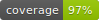
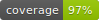
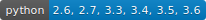
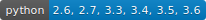

Flask RestPlus
 


 


Flask-RESTPlus is an extension for Flask that adds support for quickly building REST APIs. Flask-RESTPlus encourages best practices with minimal setup. If you are familiar with Flask, Flask-RESTPlus should be easy to pick up. It provides a coherent collection of decorators and tools to describe your API and expose its documentation properly using Swagger.
Compatibility
Flask-RestPlus requires Python 2.7 or 3.4+.
Installation
You can install Flask-Restplus with pip:
$ pip install flask-restplusor with easy_install:
$ easy_install flask-restplusQuick start
With Flask-Restplus, you only import the api instance to route and document your endpoints.
from flask import Flask
from flask_restplus import Api, Resource, fields
app = Flask(__name__)
api = Api(app, version='1.0', title='TodoMVC API',
description='A simple TodoMVC API',
)
ns = api.namespace('todos', description='TODO operations')
todo = api.model('Todo', {
'id': fields.Integer(readOnly=True, description='The task unique identifier'),
'task': fields.String(required=True, description='The task details')
})
class TodoDAO(object):
def __init__(self):
self.counter = 0
self.todos = []
def get(self, id):
for todo in self.todos:
if todo['id'] == id:
return todo
api.abort(404, "Todo {} doesn't exist".format(id))
def create(self, data):
todo = data
todo['id'] = self.counter = self.counter + 1
self.todos.append(todo)
return todo
def update(self, id, data):
todo = self.get(id)
todo.update(data)
return todo
def delete(self, id):
todo = self.get(id)
self.todos.remove(todo)
DAO = TodoDAO()
DAO.create({'task': 'Build an API'})
DAO.create({'task': '?????'})
DAO.create({'task': 'profit!'})
@ns.route('/')
class TodoList(Resource):
'''Shows a list of all todos, and lets you POST to add new tasks'''
@ns.doc('list_todos')
@ns.marshal_list_with(todo)
def get(self):
'''List all tasks'''
return DAO.todos
@ns.doc('create_todo')
@ns.expect(todo)
@ns.marshal_with(todo, code=201)
def post(self):
'''Create a new task'''
return DAO.create(api.payload), 201
@ns.route('/<int:id>')
@ns.response(404, 'Todo not found')
@ns.param('id', 'The task identifier')
class Todo(Resource):
'''Show a single todo item and lets you delete them'''
@ns.doc('get_todo')
@ns.marshal_with(todo)
def get(self, id):
'''Fetch a given resource'''
return DAO.get(id)
@ns.doc('delete_todo')
@ns.response(204, 'Todo deleted')
def delete(self, id):
'''Delete a task given its identifier'''
DAO.delete(id)
return '', 204
@ns.expect(todo)
@ns.marshal_with(todo)
def put(self, id):
'''Update a task given its identifier'''
return DAO.update(id, api.payload)
if __name__ == '__main__':
app.run(debug=True)Documentation
The documentation is hosted on Read the Docs